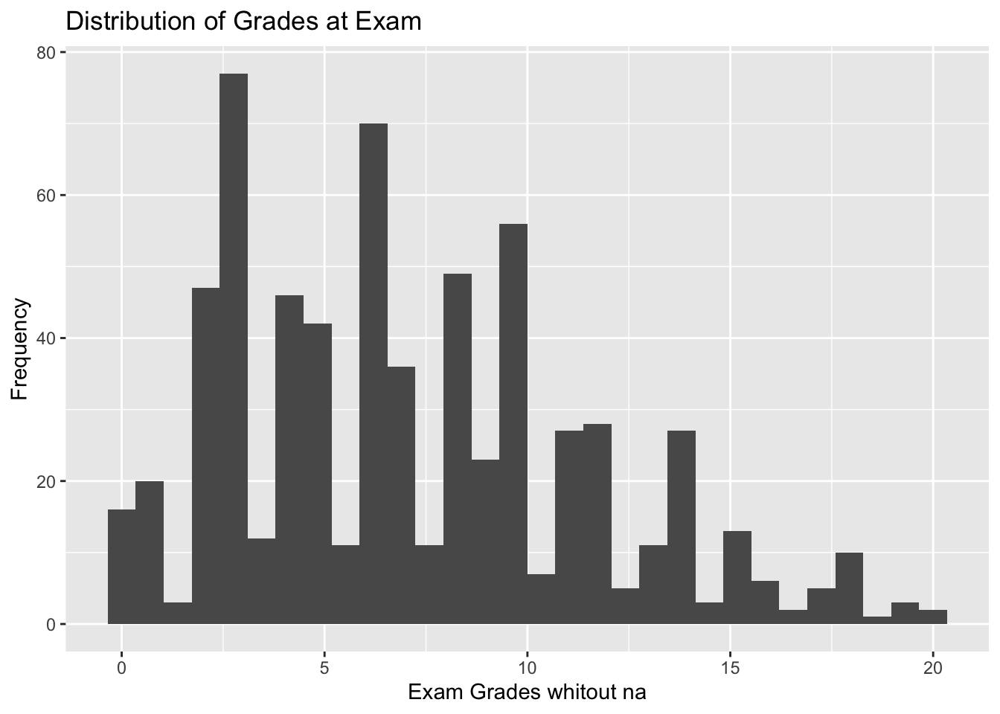
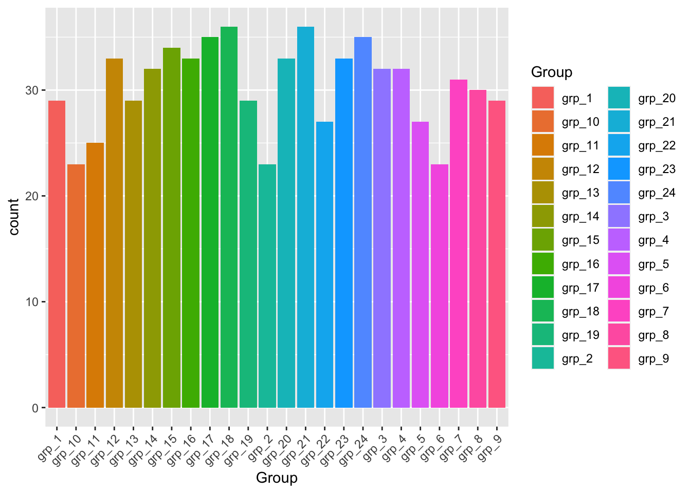
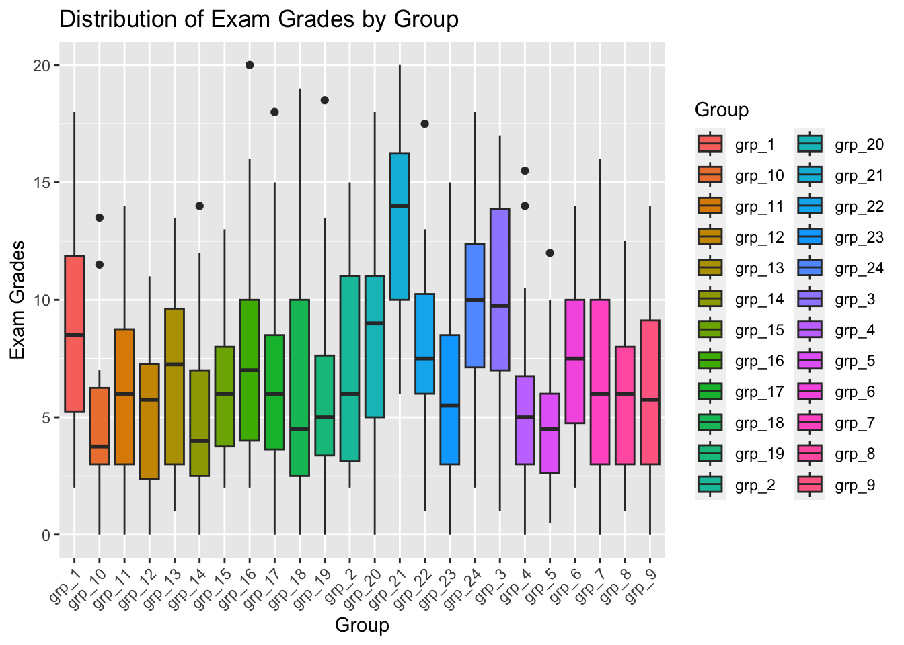
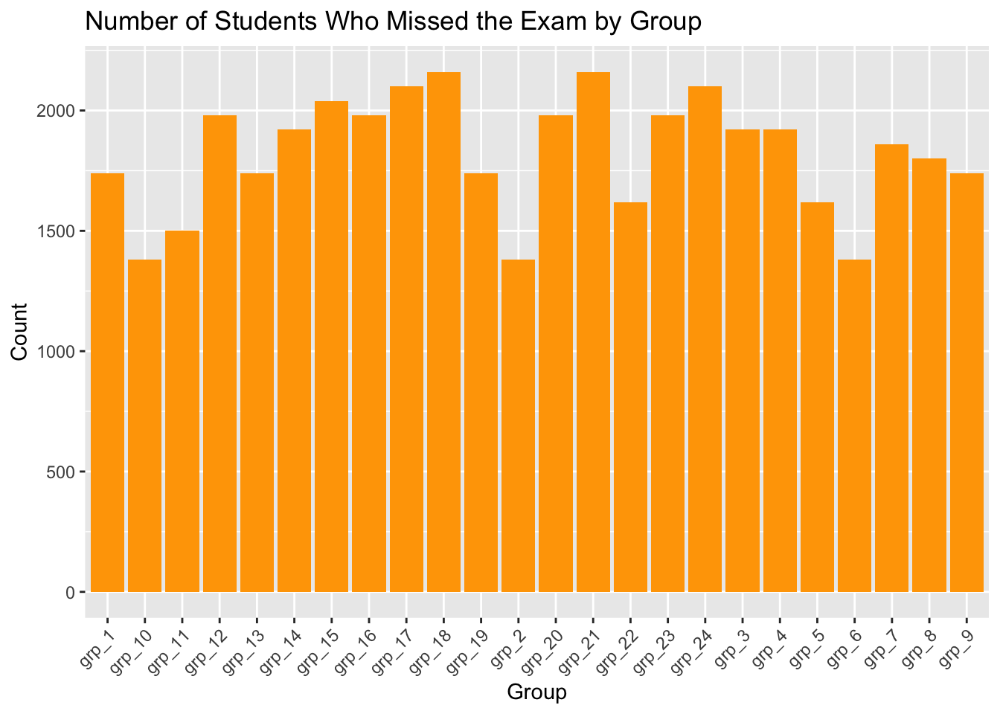

grades <- vroom(here("grades.csv"))
#| echo: false
#| message: false
grades |> summarise(anyNA(Exam))# A tibble: 1 × 1
`anyNA(Exam)`
<lgl>
1 TRUE is.na(c(1, 2, NA, 4, NA))[1] FALSE FALSE TRUE FALSE TRUEgrades <- vroom(here("grades.csv"))
#| echo: false
#| message: false
grades |> summarise(anyNA(Exam))# A tibble: 1 × 1
`anyNA(Exam)`
<lgl>
1 TRUE is.na(c(1, 2, NA, 4, NA))[1] FALSE FALSE TRUE FALSE TRUE| Minimum | Maximum | Median | Mean |
|---|---|---|---|
| 0 | 20 | 6.5 | 7.148729 |
# A tibble: 2 × 2
`is.na(Exam)` n
<lgl> <int>
1 FALSE 669
2 TRUE 60The number of students who did not take the final exam is 60
| Group | Count |
|---|---|
| grp_1 | 29 |
| grp_10 | 23 |
| grp_11 | 25 |
| grp_12 | 33 |
| grp_13 | 29 |
| grp_14 | 32 |
| grp_15 | 34 |
| grp_16 | 33 |
| grp_17 | 35 |
| grp_18 | 36 |
| grp_19 | 29 |
| grp_2 | 23 |
| grp_20 | 33 |
| grp_21 | 36 |
| grp_22 | 27 |
| grp_23 | 33 |
| grp_24 | 35 |
| grp_3 | 32 |
| grp_4 | 32 |
| grp_5 | 27 |
| grp_6 | 23 |
| grp_7 | 31 |
| grp_8 | 30 |
| grp_9 | 29 |


missed_exam_counts <- grades %>%
group_by(Group) %>%
summarise(Count_Missed_Exam = sum(is.na(Exam)))
missed_exam_counts <- table(grades$Group, is.na(grades$Exam))
missed_exam_counts <- as.data.frame(missed_exam_counts)
colnames(missed_exam_counts) <- c("Group", "Count_Missed_Exam")
missed_exam_counts Group Count_Missed_Exam NA
1 grp_1 FALSE 26
2 grp_10 FALSE 16
3 grp_11 FALSE 19
4 grp_12 FALSE 32
5 grp_13 FALSE 28
6 grp_14 FALSE 31
7 grp_15 FALSE 32
8 grp_16 FALSE 33
9 grp_17 FALSE 30
10 grp_18 FALSE 33
11 grp_19 FALSE 28
12 grp_2 FALSE 18
13 grp_20 FALSE 33
14 grp_21 FALSE 36
15 grp_22 FALSE 27
16 grp_23 FALSE 31
17 grp_24 FALSE 34
18 grp_3 FALSE 30
19 grp_4 FALSE 27
20 grp_5 FALSE 26
21 grp_6 FALSE 20
22 grp_7 FALSE 27
23 grp_8 FALSE 28
24 grp_9 FALSE 24
25 grp_1 TRUE 3
26 grp_10 TRUE 7
27 grp_11 TRUE 6
28 grp_12 TRUE 1
29 grp_13 TRUE 1
30 grp_14 TRUE 1
31 grp_15 TRUE 2
32 grp_16 TRUE 0
33 grp_17 TRUE 5
34 grp_18 TRUE 3
35 grp_19 TRUE 1
36 grp_2 TRUE 5
37 grp_20 TRUE 0
38 grp_21 TRUE 0
39 grp_22 TRUE 0
40 grp_23 TRUE 2
41 grp_24 TRUE 1
42 grp_3 TRUE 2
43 grp_4 TRUE 5
44 grp_5 TRUE 1
45 grp_6 TRUE 3
46 grp_7 TRUE 4
47 grp_8 TRUE 2
48 grp_9 TRUE 5# A tibble: 729 × 2
Group Count_Missed_Exam
<chr> <int>
1 grp_16 60
2 grp_22 60
3 grp_24 60
4 grp_7 60
5 grp_4 60
6 grp_20 60
7 grp_11 60
8 grp_14 60
9 grp_13 60
10 grp_22 60
# ℹ 719 more rows